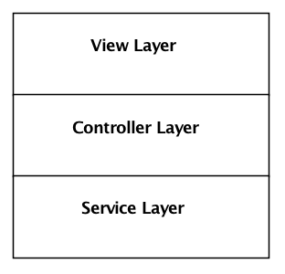
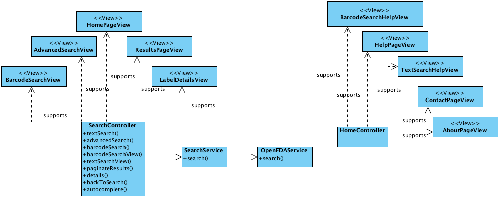
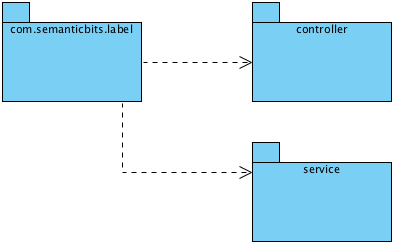
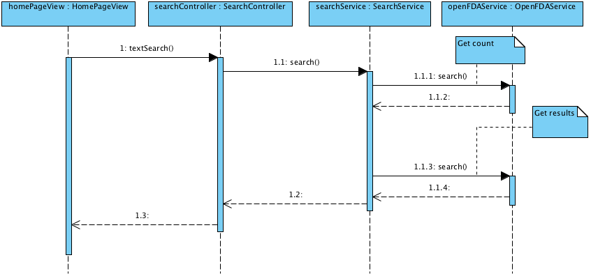
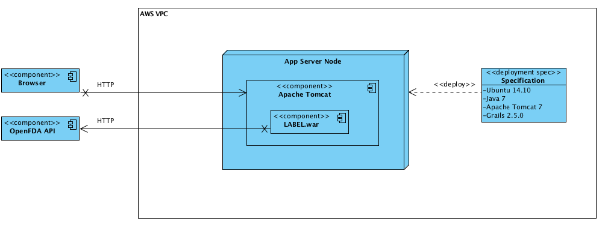

Scenarios
Following are the architecturally important scenarios.
Logical View
Component Layers

The LABEL application components are organized into three layers:
- View: Components responsible for rendering the Web-based UI - HTML, CSS, JavaScript.
- Controller: Components responsible for responding to user actions via the Web browser.
- Service: Components that encapsulate business logic and interact with external services.
LABEL does not have its own persistence layer.

View Components
Refer to wireframes and mockups.
- HomePageView (LABEL-25): Renders the initial search controls (box and button).
- AboutPageView (LABEL-38): Renders the About page.
- ContactPageView (LABEL-37): Renders the Contact page.
- HelpPageView (LABEL-36): Renders the Help page.
- TextSearchHelpView (LABEL-39): Renders the Help tooltip for text search.
- ResultsPageView (LABEL-26): Renders search results, controls to navigate the results, and search controls.
- AdvancedSearchView (LABEL-28): Allows the user to search against individual fields.
- BarcodeSearchView (LABEL-30): Allows the user to search by barcode.
- BarcodeSearchHelpView (LABEL-34): Renders the Help tooltip for barcode search.
- LabelDetailsView (LABEL-32): Renders all fields of the label.
Controller Components
- SearchController: Supports all search-related views.
- textSearch (LABEL-25, LABEL-26): Supports searching against all fields from HomePageView or ResultsPageView. Delegates to SearchService.search.
- advancedSearch (LABEL-28): Supports searching against a given field from AdvancedSearchView. Delegates to SearchService.search.
- barcodeSearch (LABEL-29): Supports searching by barcode. Delegates to advancedSearch.
- barcodeSearchView (LABEL-29): Supports switching to the BarcodeSearchView.
- textSearchView (LABEL-29): Supports switching to the HomePageView or ResultsPageView.
- paginateResults (LABEL-31): Supports navigation between pages of results on the ResultsPageView.
- details (LABEL-32): Directs the user to the Label Details view for a given label. Passes "query" and "offset" parameters to allow returning to the previous search results.
- backToSearch (LABEL-41): Directs the user back to the previous search, positioned on the appropriate page. Uses the "query" and "offset" parameters based from the LabelDetailsView.
- autocomplete (LABEL-28): Returns field names, given the first few characters.
- HomeController: Supports all non-search resulted views.
- home (LABEL-25): Directs the user to the Home page.
- about (LABEL-38): Directs the user to the About page.
- contact (LABEL-37): Directs the user to the Concat page.
- help (LABEL-36): Directs the user to the Help page.
- textHelp (LABEL-39): Supports rendering Help tooltip for text search.
- barcodeHelp (LABEL-34): Supports rendering Help tooltip for barcode search.
Service Components
- SearchService: Supports SearchController operations. Encapsulates OpenFDAService API access.
- Collaborators
- openFDAService
- Operations
- search: Supports all search operations (text, advanced, barcode, paginate). Delegates to OpenFDAService.
- Inputs:
- query (JSONObject)): Key-value pairs, where key is the search field and value is one or more search values. Each search term is included in a logical AND, while each search term value is included in a logical OR.
- offset (Integer): The index of the first result set item to include.
- pageSize (Integer): The number of results to return.
- Outputs:
- results (JSONObject): Has the following nested structure
- count: Total number of results matching the query.
- offset
- pageSize
- items: Array of result items, following the OpenFDA JSON structure.
- results (JSONObject): Has the following nested structure
- Inputs:
- search: Supports all search operations (text, advanced, barcode, paginate). Delegates to OpenFDAService.
- Collaborators
- OpenFDAService (LABEL-33, LABEL-34, LABEL-35): Handles all interaction with the OpenFDA REST API.
- Properties
- apiKey: The OpenFDA API key.
- apiURL: The OpenFDA API URL.
- Operations
- search: Interacts with the OpenFDA REST search API.
- Inputs:
- query (JSONObject): The same key-value pairs structure passed to SearchService.search.
- Outputs
- results (JSONObject): Array of items returned by the OpenFDA API.
- Inputs:
- search: Interacts with the OpenFDA REST search API.
- Properties
Development View

The LABEL application consists of a single Grails module, which is packaged as a Java EE Web Application Archive (war) file, which is deployed to an Apache Tomcat servlet container. In general, classes are organized according to the Grails standard structure. All application code is included in the com.semanticbits.label package. Sub packages include:
- controller: All controller components.
- service: All service components.
Spring is used to "wire" together collaborators, using a dependency injection pattern - e.g. SearchService is wired to the SearchContoller; OpenFDAService is wired to the SearchService. All properties (e.g. OpenFDAService.apiKey) are injected by Spring.
Process View

The user submits a query from his browser. SearchController formulates the query JSON from the HTTP parameters and delegates to SearchService. SearchService interprets the query JSON and pagination parameters and delegates to OpenFDAService to obtain the count and query results via the OpenFDA API. OpenFDAService returns the query as JSON. SearchService modifies the results to include only the desired page.
Physical View
LABEL is deployed in AWS, according to the deployment process described here.

A complete specification of the deployment environment is found in the LABEL Vagrant file.
{kind=link}
{kind=link}
{kind=link}
{kind=link}
{kind=link}
{kind=link}
{kind=link}